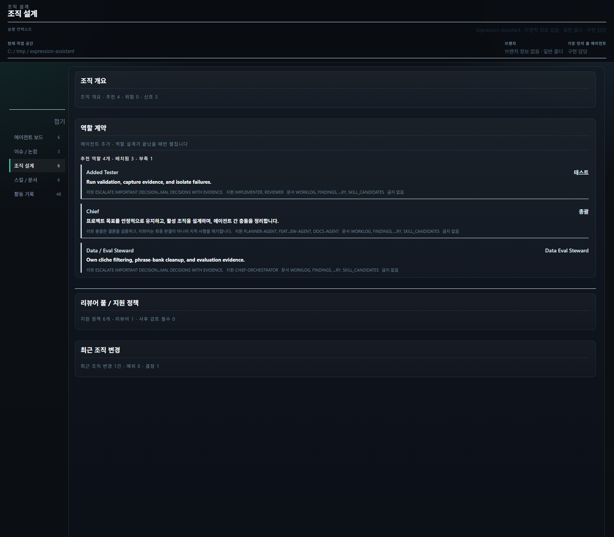
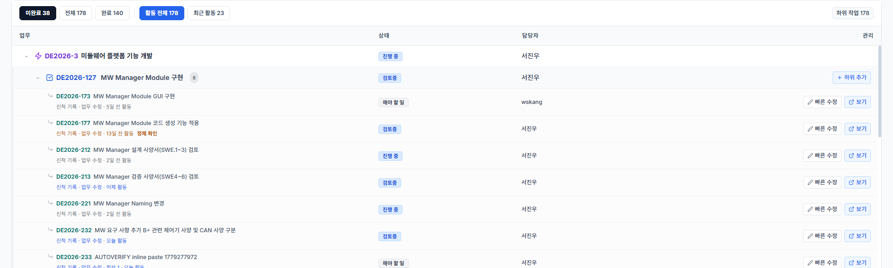
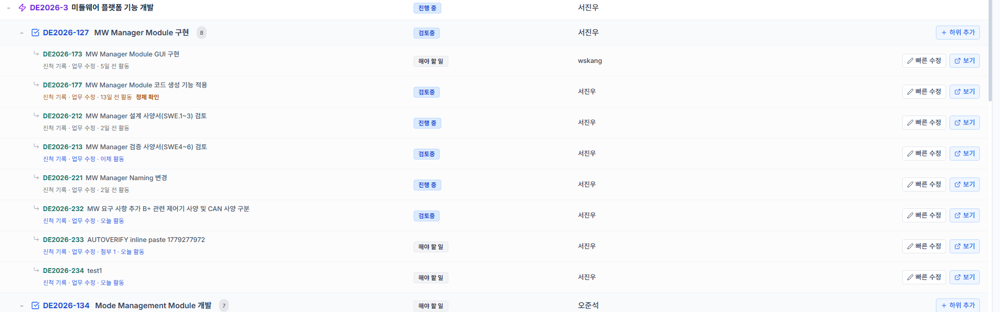
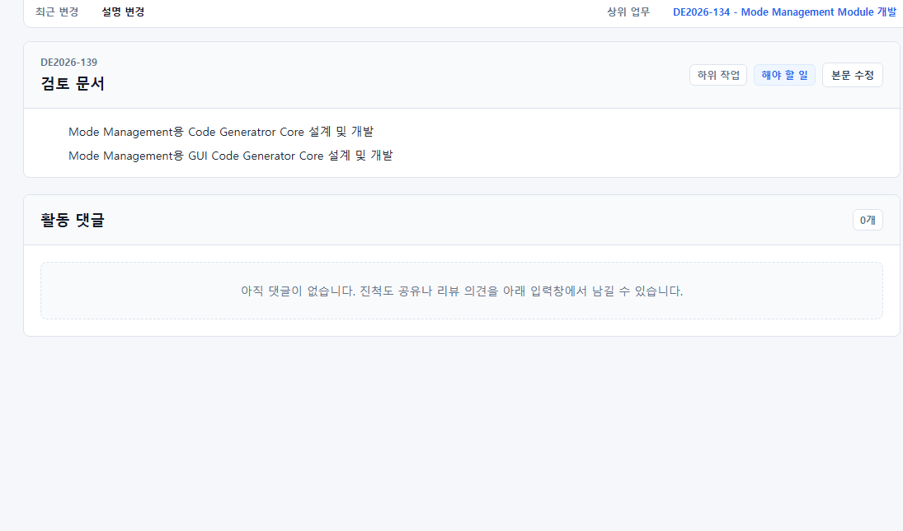
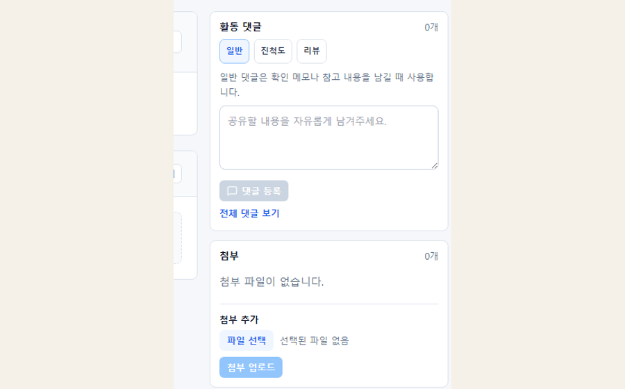

AUTOSAR 기반 자동 코드 생성 프로그램을 개발하고 있습니다. ARXML 입력 정리부터
코드 생성 결과 검증과 WSL and GCC 기반 테스트 환경까지 이어지는 흐름을 설계하고 구현합니다.
프로젝트
AUTOSAR 기반 자동 코드 생성 프로그램
직접 범위
Python 기반 툴 개발, 입력 정리, 생성 결과 검증, 자동 테스트 환경 구성
핵심 역할
ARXML 해석과 코드 생성, 검증 반복 흐름을 하나의 운영 경로로 정리
정리한 방식
입력과 생성, 검증 경계를 분리하고 실패 지점을 다시 확인하기 쉬운 구조로 바꿨습니다.
회사
LS Automotive
전장 SW 설계팀 / 연구원
Steering Wheel Column Module과 Power Seat Unit 개발을 담당했습니다.
AUTOSAR 기반 구조 설계, 모터 제어 SW 개발, 진단 and 통신 검증, 기능 안전 문서 작업을 진행했습니다.
프로젝트
SCM Platform 1.0 and 2.0, PSU Platform 2.0
직접 범위
기능 구현, 제어 로직 문서화, 진단 and 통신 검증, 결과물 정리
핵심 역할
모터 and 바디 제어 로직 구현과 AUTOSAR 구조 안의 실동작 검증
정리한 방식
기능, 진단, 검증 문서를 분리하지 않고 개발 흐름 안에서 같이 관리했습니다.
회사
동아기계부품
모터 제어 펌웨어 담당 / 사원
전동 밸브 액추에이터와 PT 센서 액추에이터 병행 개발을 맡았습니다.
MCU 변경에 따른 펌웨어 이관과 양산 대응을 함께 경험했습니다.
프로젝트
전동 밸브 액추에이터 1세대 and 2세대, PT 센서 액추에이터
직접 범위
MCU 교체 대응, 펌웨어 이관, 공정 대응, 고객 요구사항 정리
핵심 역할
모터 제어 로직 이해와 하드웨어 변화에 맞춘 동작 검증
정리한 방식
양산과 개발 사이에서 다시 설명해야 하는 흐름을 문서와 코드 기준으로 맞췄습니다.
03
개인프로젝트
개인 프로젝트 모음입니다.
로컬 에이전트 운영 콘솔
CODEX TEAM
이 프로젝트는 에이전트를 여러 개 붙여 놓은 데모가 아니라, 누가 요청했고 누가 막혔고
어떤 검토가 필요한지 한눈에 보이게 만든 로컬 운영 콘솔입니다. 결과는 채팅으로
흘러가다 사라지지 않고 issue, discussion, decision, approval, evidence로 남습니다.
만든 이유: AI 작업이 여러 갈래로 흩어지면 지금 무엇이 막혔는지, 누가 확인해야 하는지, 언제 사람이 개입해야 하는지 다시 찾기 어려웠습니다.
전체 구현보다 개입 시점과 위험을 봅니다. 언제 승인하고 언제 보류할지, 어떤 검토가 먼저인지 판단하는 자리입니다.
역할 2
Chief
요청을 해석하고 팀을 나눕니다. issue, meeting, staffing, escalation이 생기면 누가 이어받을지와 어떤 후속 조치가 필요한지 결정합니다.
역할 3
Specialists / Review
planner, implementer, tester, reviewer가 좁은 역할로 나뉘어 일하고 결과는 approval과 evidence까지 남겨 재진입 가능한 기록으로 바뀝니다.
설명용 화면 예시

조직 설계 탭에서 chief, tester, reviewer 같은 역할을 어떻게 배치했는지와 부족한 역할이 무엇인지 바로 읽을 수 있습니다.활동 기록 탭에서는 에이전트 추가, 인수인계, escalation, review 흔적이 시간순으로 이어져 사람과 AI가 어떻게 소통했는지 보입니다.
웹 기반 MCU 가상화 학습 환경
VIRTUAL MCU LAB
브라우저에서 C 코드를 실행해 보고, 그 결과가 GPIO, register, graph, log에 동시에
반영되는 흐름을 보여주기 위한 학습용 프로젝트입니다.
만든 이유: 실제 자동차 개발 아이템을 가상 환경에서 다뤄볼 수 있도록, 데이터시트와 실제 코드 기반으로 디버깅하면서 전압과 동작 반응을 확인하는 가상 교육환경을 만들었습니다.
기술스택 / 구성웹 UI, C 코드 에디터, 가상 MCU 상태 모델, schematic, register, graph, log 표시
핵심 기능
기능 1
코드 작성과 실행
브라우저 안에서 코드를 바로 바꾸고 실행해 결과를 확인할 수 있습니다. 코드를 바꿨을 때 하드웨어 반응이 어떻게 달라지는지가 바로 이어집니다.
기능 2
회로와 상태 시각화
schematic, pin 상태, register 값, graph를 따로 보지 않고 한 자리에서 연결해 보이게 했습니다.
기능 3
설명용 학습 루프
실행 결과를 log로만 끝내지 않고, 왜 이런 반응이 나왔는지 화면 요소별로 다시 읽을 수 있게 만들었습니다.
설명용 화면 예시
메인 화면에서는 어떤 실습을 시작할지 고르고, 바로 코드 실행 화면으로 넘어가게 구성했습니다.코드 편집기와 실행 결과가 붙어 있어, 수정한 코드가 어떤 반응을 만들었는지 바로 확인할 수 있습니다.register, pin, graph 화면은 실행 중 바뀌는 값을 추적하면서 하드웨어 반응 원리를 설명하는 데 쓰입니다.
Jira 경량 작업공간 / 리뷰 관리
JIRA MINI
상위 업무와 하위 작업을 한눈에 펼쳐 보고, 검색, 본문 수정, 댓글 기록,
최근 활동 확인을 같은 화면에서 이어가도록 만든 보조 도구입니다.
만든 이유: 기존 Jira 화면의 무거운 부분은 덜어내고 필요한 기능만 살려, 프로젝트 이슈 관리와 작업 진행상황 확인을 리뷰어와 사용자 모두 편하게 할 수 있는 앱을 만들었습니다.
기술스택 / 구성React UI, Jira 연동, 목록 빠른 수정, 본문 편집기, 댓글/첨부/최근 활동 표시
핵심 기능
기능 1
검색과 목록 가시성 강화
업무명, 담당자, 상태를 기준으로 찾고 상위 업무를 접고 펼치며 여러 하위 작업의 진행 흐름을 한눈에 봅니다.
기능 2
목록에서 바로 수정
상태, 담당자, 보고자, 일정 같은 관리 필드는 상세 페이지로 이동하지 않고 목록 흐름 안에서 바로 바꿀 수 있습니다.
기능 3
본문 편집과 첨부 검토
상세 화면에서는 Jira 본문 서식, 표, 차트, 이미지 첨부를 보면서 수정과 검토를 같은 맥락에서 진행합니다.
기능 4
AI 서브태스크 초안
하위 작업을 추가할 때 AI가 제목, 상세 내용, 완료 기준을 일정한 형식으로 정리해 작업 품질 편차를 줄입니다.
기능 5
댓글 기반 진척 확인
일반, 진척도, 리뷰 댓글을 나누어 남기고 최근 활동 기록을 기반으로 업데이트 여부를 빠르게 판단합니다.
설명용 화면 예시

검색, 상태 필터, 상위 업무 접기/펼치기로 여러 하위 작업을 먼저 좁혀 봅니다.

상태, 담당자, 보고자, 일정 같은 관리 필드는 목록 흐름 안에서 바로 바꿉니다.

상세 화면에서는 Jira 본문 서식, 표, 이미지 첨부를 보면서 수정과 검토를 이어갑니다.

일반, 진척도, 리뷰 댓글과 첨부 기록을 분리해 최근 활동을 빠르게 확인합니다.
한국 주식 스캔 and 리서치 도구
주식 단기 장기 분석 및 자동 매매 도구
단순 종목 조회기가 아니라 가격 패턴과 RS로 후보를 좁히고, 뉴스 and 공시 이벤트를
설명 가능한 형태로 묶고, 실거래 readiness는 별도 gate로 분리해 둔 분석 and 운영 보조 도구입니다.
만든 이유: 후보 탐색, 이벤트 해석, 장기 리서치, 실주문 준비 상태가 한 덩어리처럼 섞이면 참고 정보와 실행 조건이 흐려졌습니다.